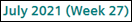

BACnet Schedules
Display Schedules in Tile View
- In System Browser, select Application View.
- Select Schedules > BACnet Schedules.
- All the BACnet schedules display in the Schedule tab in a tile view.
- Select a BACnet schedule.
- The configured schedule entries and exception entries for respective days display in the Schedule tab. The values of schedule entries are represented as icons. In order to view entries in any week other than the current week, click or in

NOTE: When you select a schedule with an exception with partial date entries specified for date range or a calendar with a partially specified date range, then the Legacy exceptions hidden message displays. The message also displays when you associate a calendar with partial date entries to a schedule exception. Examples of partial date entries are:
Start date unspecified, end date 2019-08-dd.
Start date 2019-mm-08, end date unspecified.
Start date yyyy-12-25 and end date yyyy-12-31.
Add Schedule Exceptions
- In System Browser, select Schedules.
- Select BACnet Schedules > BACnet Network > Hardware > [Device] > Local_IO.
- Select the BACnet schedule to which you want to add an exception.
- Click Edit.
- Click Exceptions.
- The Calendar view displays.
- Click Add.
- In the <new exception> dialog box, select the type of exception you want to add to the schedule. The following exception types are available:
- Date: Adds an exception for a single date.
- Date range: Adds an exception for a particular date range.
- Weekday: Adds an exception for a particular day, week, and month of the year.
- Recurring: Adds an exception for a recurring time period.
- Calendar: Adds an exception to the schedule according to the time period specified in the calendar.
- Specify the time period for the exception and click Save.
- The exception configured reflects in the Calendar view and is listed in the List view.
Copy Schedule Entries
- In System Browser, select Schedules.
- Select BACnet Schedules > BACnet Network > Hardware > [Device] > Local_IO.
- Select a BACnet schedule.
- Click Edit.
- Click Copy.
- Select the schedule entry for the day that you want to copy and click Next.
- Select the days on which you want to repeat the schedule entry. Click Paste.
Copy Schedule Exception Entries
- In System Browser, select Schedules.
- Select BACnet Schedules > BACnet Network > Hardware > [Device] > Local_IO.
- Select the BACnet schedule whose exception you want to copy.
- Click Edit.
- Click Exceptions.
- Select the exception schedule entry whose details you want to copy.
- Click Copy.
- Select the day or days on which you want to repeat the exception schedule entry.
- Click Paste.
Delete Schedule Exceptions
- In System Browser, select Schedules.
- Select BACnet Schedules > BACnet Network > Hardware > [Device] > Local_IO.
- Select the BACnet schedule whose exception you want to delete.
- Click Edit.
- Click Exceptions.
NOTE: You can delete an exception either from the List view or from the Calendar view. For List view, continue with step 6. For Calendar view, continue with step 7. - (Optional) Perform the following steps to delete the exception entry from the List view:
a. Click List view.
b. Select the exception entry from the list.
c. Click Delete. - (Optional) Perform the following steps to delete the exception entry from the Calendar view:
a. Click Calendar view.
b. Select the day on which the exception entry is configured.
c. Click Delete on the exception entry.
d. Click Save.
Edit Existing Calendar Entries
- In System Browser, select Schedules.
- Select BACnet Calendars > BACnet Network > Hardware > [Device] > Local_IO.
- Select the BACnet calendar that you want to edit.
- The calendar displays in the Calendar view along with the configured entries. All the calendar entries configured for the selected BACnet calendar also display in the List view.
- Perform either of the following steps:
- To modify an existing calendar entry, select the entry in the Calendar view. The details of the entry display on the right side. Specify the new date value and click Save.
- To add a new entry, click Add. In the <new calendar entry> dialog box, select the type of calendar entry to be added, such as Date, Date range, Weekday, Recurring. Depending on the type of calendar entry selected, the corresponding fields display in the <new calendar entry> section. Specify the required values and click Save.
- You can also modify a calendar entry from the List view by selecting the entry and modifying the date.
- The calendar is saved with the updated entry.
NOTE: You can delete an existing calendar entry by selecting the entry and click Delete.
Edit Schedule Exceptions
- In System Browser, select Schedules.
- Select BACnet Schedules > BACnet Network > Hardware > [Device] > Local_IO.
- Select the BACnet schedule whose exception you want to edit.
- Click Edit.
- Click Exceptions.
NOTE: You can edit an exception either from the List view or from the Calendar view. For List view, continue with step 6. For Calendar view, continue with step 7. - (Optional) Perform the following steps to edit the exception from the List view:
a. Click List view.
b. Select the exception entry to be edited.
c. Modify the parameters such as the start date, end date, time, or value of the schedule exception.
d. Click Save. - (Optional) Perform the following steps to edit the exception from the Calendar view:
a. Select Calendar view.
b. Select the day on which the exception entry is configured. The details of the exception entry display in the right pane.
c. Modify the parameters of the exception entry.
d. Click Save.

NOTE:
To convert an exception entry of type Date to Date range, select the date on which the entry is configured, select Range, and then select the end date for the date range. Select OK.
Search Schedules and Calendars
- In System Browser, select Application View > Schedules.
- All the schedules and calendars display in the Schedule tab in a tile view.
- In the Search... field, enter the name or description of the schedule object.
- The object with the matching name is filtered and displays from the list of objects.
Display Calendars in Tile View
- In System Browser, select Application View.
- Select Schedules > BACnet Calendars.
- All the BACnet calendars display in the Schedule tab in a tile view.
- Select a BACnet calendar.
- The calendar displays in the Calendar view along with the configured entries.
- Select List view.
- All the calendar entries configured for the selected BACnet calendar display in a list.
NOTE: When you select a schedule with an exception with partial date entries specified for date range or a calendar with a partially specified date range, then the Legacy exceptions hidden message displays. The message also displays when you associate a calendar with partial date entries to a schedule exception. Examples of partial date entries are:
Start date unspecified, end date 2019-08-dd.
Start date 2019-mm-08, end date unspecified.
Start date yyyy-12-25, end date yyyy-12-31.